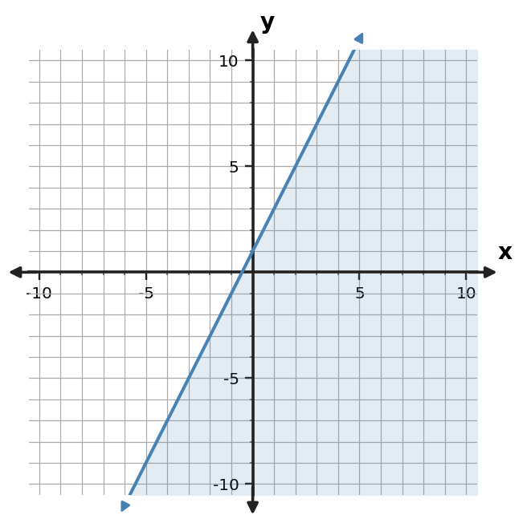
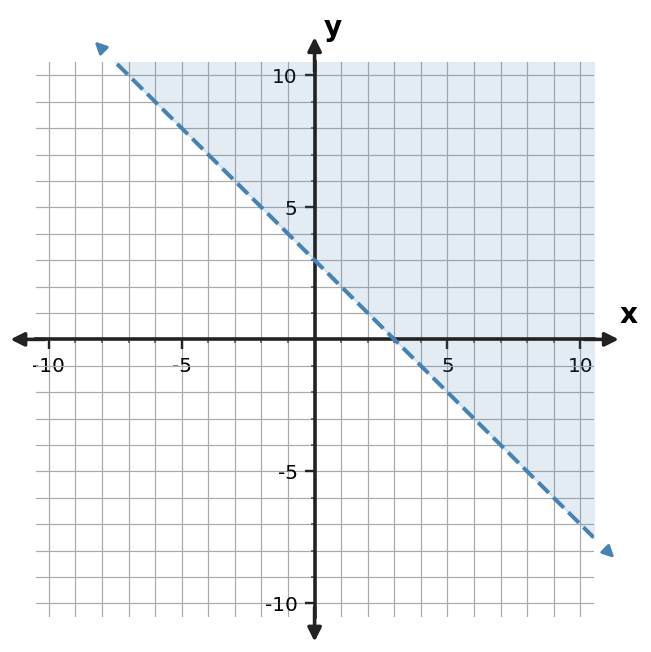
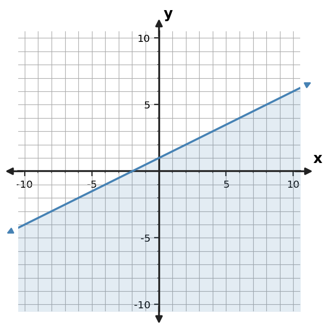
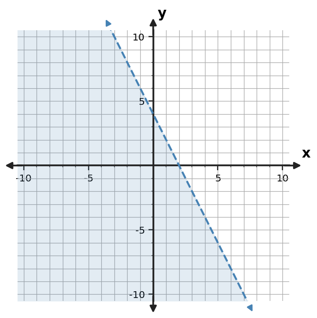

Section 3.4: Graphing Linear Inequalities
Guided Notes
Use representations and algebra to identify values that satisfy multiple relationships or constraints.
Learning Target
Students will graph and interpret linear inequalities.
- I can construct a boundary line and shaded region for a linear inequality.
- I can use test points to interpret which region satisfies an inequality.
- I can critique a graph of a linear inequality using the boundary, shading, and solution region.
Vocabulary / Key Notation Preview
linear inequality • boundary line • solid/dashed line • test point • half-plane
Sort the vocabulary. Write each vocabulary word in the column that best matches what you know right now. You may move a word later.
| Know for sure | Recognize | Don't know yet |
|---|---|---|
What's to Come
DO NOT SOLVE IT YET.
Circle anything familiar, underline symbols, labels, conditions, data, or features that seem important, and write short notes about what you think may matter later.
The graph shows a shaded half-plane. Describe what the dashed boundary communicates, choose a point from the shaded region and explain how it could be checked, and predict how the graph would change if the boundary were included.

Let's Get Started
Skim the section. Record what catches your attention before you read closely.
| What I noticed | |
|---|---|
| What I predict | |
| What I wonder |
READ IN SHORT CHUNKS.
Annotate the words and visuals together. Underline evidence, circle or highlight bold vocabulary, label arrows, measurements, or important features, connect sentences to figures, and jot short questions or connections in the margins.
I can construct a boundary line and shaded region for a linear inequality.
A linear inequality in two variables describes a region of possible ordered pairs rather than only the points on one line. The related equality forms the boundary line, which separates the plane into two half-planes. One half-plane satisfies the inequality and the other does not.
The inequality symbol determines whether points on the boundary are included. For $\le$ or $\ge$, equality is allowed, so the boundary is solid. For $\lt $ or $\gt $, equality is not allowed, so the boundary is dashed. The solid/dashed line choice communicates membership in the solution set.
When an inequality is written as $y\gt mx+b$, the solution region lies above the boundary because the allowed $y$-values are greater than the boundary value at each $x$. For $y\lt mx+b$, the region lies below. If the inequality is not easy to read in that form, a test point gives a reliable decision.
Graphing an inequality therefore has two separate decisions: draw the correct boundary and identify the correct side. A correct line with incorrect shading is not a correct graph of the inequality.
- What does the boundary line represent?
- How do $\lt $ and $\le$ differ on a graph?
- Why are boundary choice and shading choice separate decisions?
| Symbol | Boundary | Boundary points? |
|---|---|---|
| $\lt $ | Dashed | Excluded |
| $\gt $ | Dashed | Excluded |
| $\le$ | Solid | Included |
| $\ge$ | Solid | Included |
Example 1: State Boundary and Shading
For $y \lt -2x+4$, state whether the boundary is solid or dashed and which side is shaded.
You Try It 1: State Boundary and Shading
For $y\gt 2x-4$, state whether the boundary is solid or dashed and which side is shaded.
I can use test points to interpret which region satisfies an inequality.
A test point is an ordered pair chosen off the boundary and substituted into the original inequality. If the resulting statement is true, shade the half-plane containing the test point. If it is false, shade the opposite half-plane.
The point $(0,0)$ is often convenient because substitution is simple, but it is not special. If the origin lies on the boundary, choose another easy point such as $(1,0)$ or $(0,1)$. The point must distinguish one side from the other.
Testing uses the same definition of solution that we use everywhere else: an ordered pair belongs to the solution region if its coordinates make the inequality true. The graph is a picture of all such pairs.
This makes shading evidence-based rather than memorized. Even when “above means greater than” is easy to see, a test point can verify the decision and is especially useful when the inequality is written in standard form.
- What makes a point a valid test point?
- What do you do when the test point makes the inequality true?
- Why is testing a point more reliable than memorizing a shading rule?
| Step | Question |
|---|---|
| 1 | Is the point off the boundary? |
| 2 | Does substitution make the original inequality true? |
| 3 | If true, shade the side containing the point; if false, shade the other side. |
Example 2: Use a Test Point
Use the test-point table to decide whether $(0,0)$ belongs in the solution region.
| Test point | Left side y | Boundary value | Satisfies? |
|---|---|---|---|
| (0,0) | 0 | 4 | No |
You Try It 2: Use a Test Point
Use the test-point table to decide whether $(0,0)$ belongs in the solution region for $y\le 2x+1$.
| Test point | Left side $y$ | Boundary value | Satisfies? |
|---|---|---|---|
| $(0,0)$ | 0 | 1 | Yes |
I can critique a graph of a linear inequality using the boundary, shading, and solution region.
To critique or decode a graph, read three features together: the boundary equation, the line style, and the shaded side. The slope and intercept identify the boundary line. Solid versus dashed tells whether equality is included. The shaded solution region tells which side satisfies the inequality.
A graph can be partly correct and still represent the wrong inequality. For example, a graph of $y\lt -2x+3$ may have the correct boundary and correct shading below but still be wrong if the line is solid. The strict symbol requires a dashed boundary.
When writing an inequality from a graph, use a point in the shaded region to verify the direction of the symbol. Then use boundary style to decide between strict and inclusive versions. This avoids guessing from the visual alone.
A strong critique explains the specific mismatch and how to repair it. “The graph is wrong” is incomplete; identify whether the error is in the boundary, inclusion, or shading.
- Which graph feature determines strict versus inclusive inequality?
- Which features determine the boundary equation?
- How would you explain a graph with correct shading but the wrong line style?
Use slope/intercept or two points to write the related equation.
Solid means inclusive; dashed means strict.
Choose a shaded test point to determine the inequality direction.
Substitute the point and confirm the statement is true.
Example 3: Decode a Shaded Graph
Write an inequality represented by the shaded graph. Include the correct inequality symbol.

You Try It 3: Decode a Shaded Graph
Write an inequality represented by the shaded graph. Include the correct inequality symbol.

- If two graphs have the same boundary and shaded side but one is solid and one is dashed, what mathematical difference do they represent?
Example 4: Decode Boundary and Shading
Write an inequality represented by the shaded graph. Include the correct inequality symbol.

You Try It 4: Decode Boundary and Shading
Write an inequality represented by the shaded graph. Include the correct inequality symbol.

Example 5: Critique Boundary Inclusion
A student graphs $y\lt -2x+3$ with a solid line and shades below. Identify the error.
You Try It 5: Critique Boundary Inclusion
A student graphs $y\ge x-2$ with a dashed boundary and shades above. Identify the error.
Example 6: Write an Inequality from a Graph
Write an inequality represented by the shaded graph. Include the correct inequality symbol.

You Try It 6: Write an Inequality from a Graph
Write an inequality represented by the shaded graph. Include the correct inequality symbol.

Summary
- The related equality creates the boundary line of a two-variable linear inequality.
- Strict inequalities use dashed boundaries; inclusive inequalities use solid boundaries.
- The solution is an entire half-plane, not just the boundary line.
- A test point determines which side satisfies the inequality.
- To critique a graph, check the boundary equation, line style, and shaded region separately.
Common Mistakes
| Common mistake | Better habit |
|---|---|
| Using a solid boundary for $\lt $ or $\gt $. | Strict inequalities exclude equality, so use a dashed boundary. |
| Using a dashed boundary for $\le$ or $\ge$. | Inclusive inequalities include equality, so use a solid boundary. |
| Shading from memory without evidence. | Use a test point when there is any uncertainty. |
| Checking only the shaded side when critiquing. | Also verify the boundary equation and whether the boundary is included. |